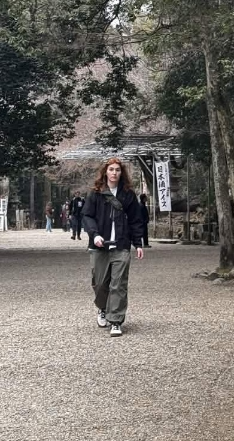

Luc Walz - Technical Artist | Graphics Programmer | Game Developer
██╗ ██╗ ██╗ ██████╗ ██╗ ██╗ █████╗ ██╗ ███████╗ ██║ ██║ ██║██╔════╝ ██║ ██║██╔══██╗██║ ╚══███╔╝ ██║ ██║ ██║██║ ██║ █╗ ██║███████║██║ ███╔╝ ██║ ██║ ██║██║ ██║███╗██║██╔══██║██║ ███╔╝ ███████╗╚██████╔╝╚██████╗ ╚███╔███╔╝██║ ██║███████╗███████╗ ╚══════╝ ╚═════╝ ╚═════╝ ╚══╝╚══╝ ╚═╝ ╚═╝╚══════╝╚══════╝Technical Artist | Graphics Programmer | Game Developer
Projects
██████╗ ██████╗ ██████╗ ██╗███████╗ ██████╗████████╗███████╗ ██╔══██╗██╔══██╗██╔═══██╗ ██║██╔════╝██╔════╝╚══██╔══╝██╔════╝ ██████╔╝██████╔╝██║ ██║ ██║█████╗ ██║ ██║ ███████╗ ██╔═══╝ ██╔══██╗██║ ██║██ ██║██╔══╝ ██║ ██║ ╚════██║ ██║ ██║ ██║╚██████╔╝╚█████╔╝███████╗╚██████╗ ██║ ███████║ ╚═╝ ╚═╝ ╚═╝ ╚═════╝ ╚════╝ ╚══════╝ ╚═════╝ ╚═╝ ╚══════╝
█████╗ ██████╗ ██████╗ ██╗ ██╗████████╗ ██╔══██╗██╔══██╗██╔═══██╗██║ ██║╚══██╔══╝ ███████║██████╔╝██║ ██║██║ ██║ ██║ ██╔══██║██╔══██╗██║ ██║██║ ██║ ██║ ██║ ██║██████╔╝╚██████╔╝╚██████╔╝ ██║ ╚═╝ ╚═╝╚═════╝ ╚═════╝ ╚════╝ ╚═╝

I'm a graphics and game programmer with a passion for creating unique visuals.
I studied at Michigan State University and graduated with
a Bachelor's of Engineering in Computer Science.
Outside of work, I love to cook, sail, hike and climb. Of course I also enjoy
playing video games!
This portfolio shows various projects I'm working on or have worked on.
I'm constantly updating it with new content and project updates.
C++/C#
GDScript
Lua
GLSL/HLSL
Contact
██████╗ ██████╗ ███╗ ██╗████████╗ █████╗ ██████╗████████╗ ██╔════╝██╔═══██╗████╗ ██║╚══██╔══╝██╔══██╗██╔════╝╚══██╔══╝ ██║ ██║ ██║██╔██╗ ██║ ██║ ███████║██║ ██║ ██║ ██║ ██║██║╚██╗██║ ██║ ██╔══██║██║ ██║ ╚██████╗╚██████╔╝██║ ╚████║ ██║ ██║ ██║╚██████╗ ██║ ╚═════╝ ╚═════╝ ╚═╝ ╚═══╝ ╚═╝ ╚═╝ ╚═╝ ╚═════╝ ╚═╝
Reach out to me!